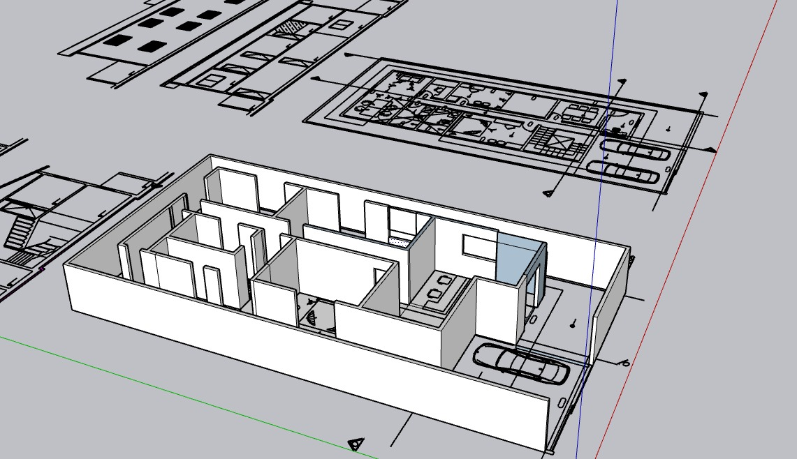

Arquitetura para Estúdios
Conceitos de organização espacial, flexibilidade e funcionalidade.

Projeto desenvolvido pela equipe ACGL Engenharia Civil, transformando uma residência em um espaço profissional, respeitando o limite máximo de 40% de reforma.
O projeto teve como objetivo transformar uma residência existente em um moderno Studio de Mídias Digitais, preservando parte da edificação original e respeitando as limitações propostas na atividade.
Conceitos de organização espacial, flexibilidade e funcionalidade.
Uso da iluminação natural e artificial para produções fotográficas.
Tratamentos necessários para reduzir ruídos internos e externos.
Aplicação de princípios de acessibilidade e circulação.
Aproveitamento da iluminação, ventilação e eficiência energética.
Espaço destinado às produções fotográficas com iluminação planejada.
Área destinada ao atendimento dos clientes.
Espaço administrativo.
Ambiente de apoio aos colaboradores.
Atende funcionários e visitantes.
Navegue pelas plantas, cortes e fachadas para acompanhar toda a evolução da proposta arquitetônica.
Acompanhe toda a evolução da proposta arquitetônica através de nossas perspectivas.

O projeto demonstrou que é possível transformar uma residência em um moderno Studio de Mídias Digitais utilizando soluções arquitetônicas eficientes, respeitando as limitações da atividade e garantindo funcionalidade, conforto e estética.
Pavimentos
Limite de Reforma
Integrantes